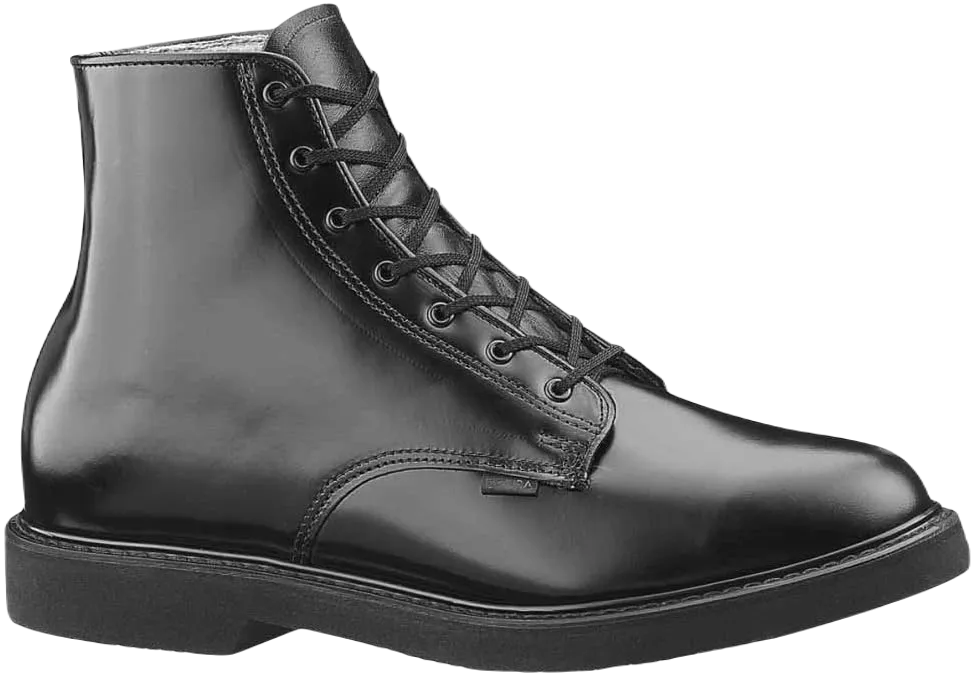
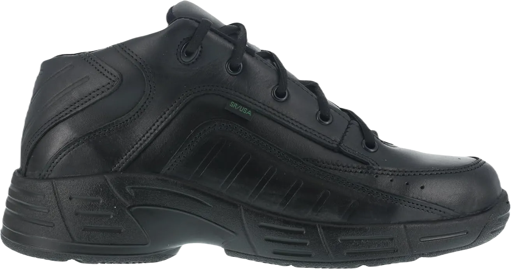

Top 5 Best Shoes For Mail Carriers 2024
Today, we’re focusing on the best shoes for mail carriers. While there are various types of footwear for different needs, it’s essential to consider the unique requirements of mail carriers as well.
As a mail carrier, you’re on your feet for long hours, often walking briskly to cover significant distances. This can be exhausting, and wearing the wrong shoes can lead to discomfort and foot pain. Therefore, having the right footwear is crucial for maintaining comfort and preventing injuries throughout your busy day.
-
#1
New Balance 706 Walking Shoe
.webp)
You’ll appreciate the New Balance 706 walking shoe, especially designed for mail carriers, thanks to its exceptional and comfortable features.
This shoe offers outstanding cushioning, ensuring long-lasting comfort whether you're standing or walking all day. Cushioning is a crucial aspect of any quality shoe, and if you know a shoe has great cushioning, you can count on it for support. Without it, the shoe may not provide the comfort you need.
Another notable aspect of this shoe is its design, tailored for individuals who tend to walk briskly. So, if you find yourself walking at a faster pace—as is often the case for mail carriers—the New Balance 706 walking shoe is an excellent choice for you. -
#2
Rocky TMC Postal-Approved Plain Toe
.webp)
This shoe not only boasts an elegant appearance but also excels in providing comfort. Crafted from full-grain leather, it is both durable and high-quality.
Additionally, its water-resistant properties make it ideal for outdoor activities. Whether you encounter rain or need to travel extensively, the water resistance ensures your shoes remain unharmed, while the leather quality prevents deterioration.
As a mail carrier, you may find yourself walking in areas where your feet might unexpectedly come into contact with water. Fortunately, the Rocky TMC Postal-Approved Plain Toe Oxford Shoe is designed to protect your soles. Another excellent feature of the Rocky TMC is its non-metallic stabilizer, which maximizes security and protection against various hazards. -
#3
Reebok Work Men’s Postal Express CP8500
.webp)
Introducing another premium shoe renowned for its quality and features, this pair boasts a very decent appearance. If you appreciate stylish footwear, this is the one for you! Reebok has been a trusted name for quite some time, consistently producing top-notch shoes for various occasions and needs, including those tailored for individuals who walk frequently.
Reebok is well-known for its fitness footwear, making it an appealing choice for many. The shoes are designed for comfort, ensuring that whether you’re running or walking long distances, you’ll remain at ease. With this shoe, you not only get a stylish look but also the comfort you desire.
Additionally, the shoe is equipped with a waterproof GORE-TEX membrane, providing excellent protection against various weather conditions. This feature makes it one of the best water-resistant materials available, ensuring your feet stay dry and comfortable. -
#4
Bates Lites Leather Lace-Up Chukka Boots
Bates Lites Leather Lace-Up Chukka Boots are an excellent choice for mail carriers, equipped with features that help you tackle your demanding day. You won't be disappointed with these boots, as they offer remarkable comfort and an overall positive experience.
If you appreciate a blend of simplicity, comfort, and style, this boot is perfect for you. Its welt construction not only enhances durability but also makes the leather easy to clean and polish, allowing it to shine brilliantly.
Another standout feature of these boots is the padded cushioning inside, which significantly alleviates discomfort and provides long-lasting support. The breathable lining ensures your feet remain relaxed throughout the day, even during long walks, helping to prevent sweat buildup and keeping your feet comfortable. Having breathable footwear is essential in such conditions. -
#5
Reebok Postal TCT
Reebok is undoubtedly a leading brand, and that's why we've included another exceptional shoe model from them. The Reebok Postal TCT Shoe is perfect for those who walk daily and appreciate a classy design. This sophisticated shoe combines elegance with functionality, making it an ideal choice for everyday wear.
Featuring a seam-sealed construction, this shoe is completely waterproof, so you no longer need to worry about inclement weather. Just throw on your raincoat and rest assured that your shoes will stay protected from the elements, no matter how harsh the conditions may be
In addition to being waterproof, one of the most appreciated features of the Reebok Postal TCT Shoe is its ability to keep your feet dry. This is a significant benefit for anyone who spends long hours in shoes. While not all footwear offers this level of comfort, the Reebok Postal TCT Shoe ensures your feet remain dry, preventing itchiness and promoting overall hygiene.